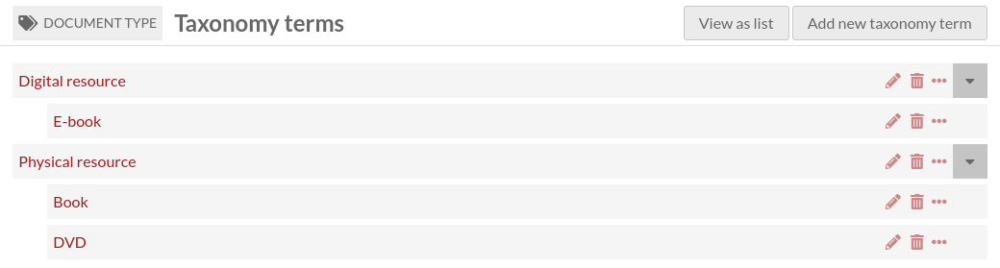

Taxonomy terms
A taxonomy term is an element of a controlled vocabulary. It belongs to a single taxonomy.
Like a taxonomy, it has a unique (among other taxonomy terms of the same taxonomy) identifier, called Code.
It can have a parent taxonomy term. The parent term must belong to the same taxonomy. This means that a taxonomy contains a hierarchy of terms.
A taxonomy term is also an Omeka S resource (like items, item sets and media), which means:
it can be linked to items, item sets and media like any other Omeka S resource (it can be linked in annotations too);
it can be described like any other resource (resource template, class, properties, annotations);
it can have a thumbnail.
List taxonomy terms
Taxonomy terms list can be accessed in two different ways:
by clicking on the tag icon in The Taxonomies tab, or
by clicking on the “View terms” button at the top of the taxonomy page

This page is very similar to The Items tab. Please refer to this documentation for general information.
There are a few differences:
There is an additional column showing the taxonomy’s Code.
Taxonomy terms can be sorted by Code.
There is an additional button at the top of the page to View (taxonomy terms) as hierarchy.
View taxonomy terms as hierarchy
Click on the “View as hierarchy” button to view all your terms as a hierarchy
Add a taxonomy term
To add a new taxonomy term, begin by selecting the the “Add new taxonomy term” button.
Values
The Values tab is where you enter metadata, such as title, description, etc.
It is identical to The Items Values tab.
Taxonomy term
The Taxonomy term tab is where you enter the taxonomy term’s unique identifier (Code), and where you select a parent term.

Advanced
The Advanced tab is where you can select a thumbnail